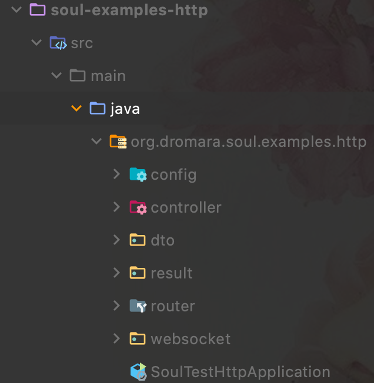

soul网关介绍
soul网关，为了实现其高性能，轻量级的目标，网关核心部分使用本地缓存存储数据，基于Spring webflux框架，做到了实时响应；所有的组件以插件形式与网关集成，易扩展且具备热插拔效果，数据同步支持http长轮训, websocket, nacos, zookeeper，选择灵活度高，且默认使用http长轮训进行数据同步，使得即便其他同步方式失效的情况下，也不影响数据同步的工作；提供控制台，在线动态修改网关配置，熔断，限流，鉴权等功能。
soul架构介绍
以下是soul官网的架构图

图中可以看出，整个soul架构分为4个模块，soul-admin，数据同步（基于SPI进行扩展的部分），soul-cluster（可以理解为soul-core，是网关的核心部分，流量接入点），soul-plugin和handler。
- soul-admin是soul的控制台，负责提供动态配置插件，路由规则，用户鉴权等功能，配置存储到数据库作为持久化方案。
- 数据同步部分，当用户通过控制台配置生效时，会通过event-bus发送配置修改事件到网关，而发送的策略使用SPI扩展实现，根据具体的配置策略，使用对应的同步方案，很灵活。
- 在网关核心部分，拥有推和拉两种方式进行数据同步。比如，使用http长轮训，则网关会主动向数据同步中心拉取数据，zk和websocket会主动向网关推送数据。
在网关的使用方面，用户请求被网关获取之后，根据其配置的插件规则进行相应处理。 - soul-plugin部分，负责网关收到请求后进行具体处理，比如，配置monitor和redis插件，则Prometheus/redis会主动向网关获取数据，配置dubbo，divide，spring cloud等插件，会主动向插件对应的工具发送数据。
结合example，熟悉soul
启动服务
- 第一次使用soul的话，启动soul项目下的soul-admin，soul-bootstrap，example下任意soul项目，
1
soul-bootstrap是网关的启动入口。

- example下我使用http作为例子。
访问网关
- 三个项目启动好之后，观察日志可以发现，http例子在启动时就会为我们注册好测试api。我们可以访问localhost:9095进入soul控制台看到已经配置好的api
1 | 如果使用其他例子,可以自行参考官网进行使用 |

- 在http例子中，默认启动端口为8188，在没有网关的时候，通常都是直接访问服务地址localhost:8188/test/findById?userId=123，这时候我们可以访问网关地址localhost:9195/http/test/findById?userId=123，来完成向目标服务的调用。
- 这里可以发现，直接访问与通过网关访问在API部分有个区别，多了个 /http，这个 /http，在soul中被称为contextPath（上下文路径，也就是下图的红框部分），这个contextPath是soul的路由前缀，soul规定在进行api配置的时候需要有一个路由前缀，除了在项目配置，也可以在控制台的divide插件进行修改。
divide插件是soul处理http请求的核心插件
- 而在divide插件进行配置的话，对应的位置就是下图红框部分。


- 访问网关地址后，发现获取到了响应数据，并且观察bootstrap的日志，发现网关访问了我们的真是服务器。

- 之后，让我们修改一下配置，看看配置的具体规则，首先修改选择器的路由规则。

- 再次访问网关，发现已经访问不到了，提示没有找到对应的选择器，

- 把地址改为galigeigei之后又可以了，我们再来看看选择器下具体api的配置修改会产生什么，把前缀干掉，只留下 /test/**的配置

- 提示没有匹配的规则

- 到这里，证明了在配置api相应规则的时候，选择器的url规则，与选择器规则中的url需要相同，除非你的匹配规则使用通配符匹配，soul的url匹配规则是将全路径作为匹配对象进行匹配，比如/http/test/find这个URL，contextPath是/http，在进行选择器匹配的时候，先根据选择器规则，在URL上进行匹配到/http，进入到规则匹配，匹配的时候会带上contextPath，前面的例子就说明了，如果规则匹配中没有定义contextPath，就会报错。
- 至此网关的初步使用就完成了，网关中内置了很多插件，比如熔断hystrix, 限流sentinel, 监控monitor，dubbo，Spring cloud等，后续尝试使用不同插件理解各插件的具体用法。